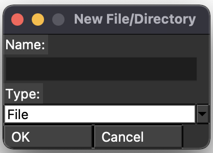
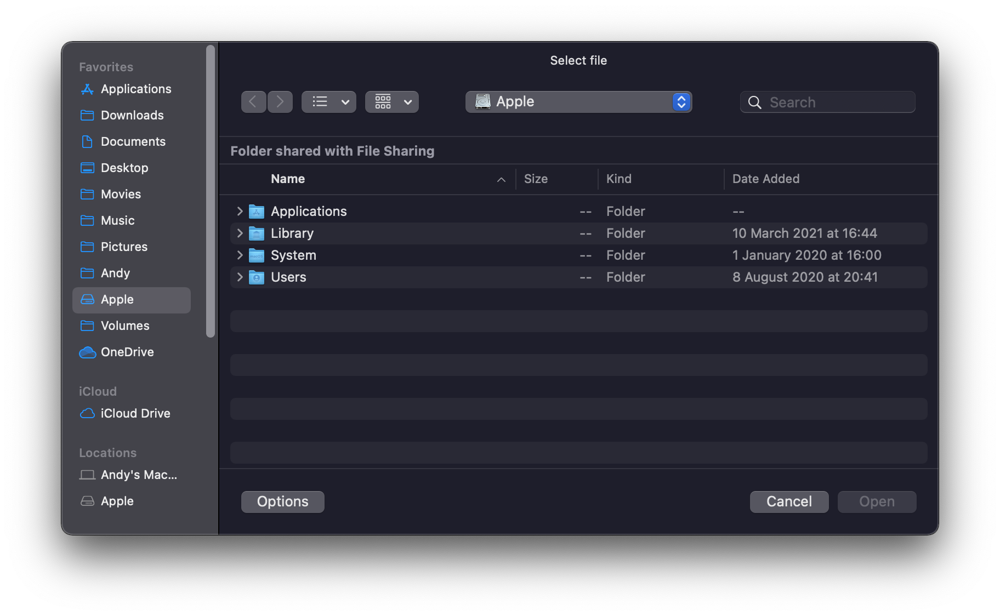
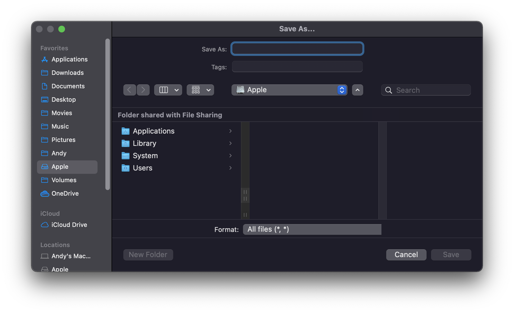

| Name | Function | Preview |
|---|---|---|
| New... | Pops up a window that asks you to create a new file/directory. |  |
| Open file | Pops up a window that asks for a file to open. |  |
| Save Copy to... | Pops up a window that asks you to save the copy of a file. |  |
| Close Tab | Closes the current tab. | No image |
| Reload current file from disk | Reloads the current file. If you have made changes externally, then use this function. | No image |
| Reload all files from disk | Reloads all the files. If you have made lots of changes externally, then use this function. | No image |